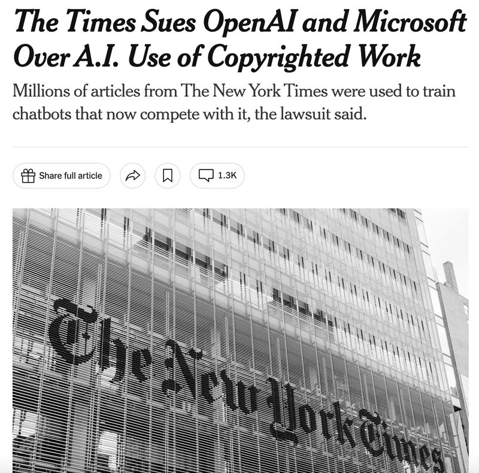
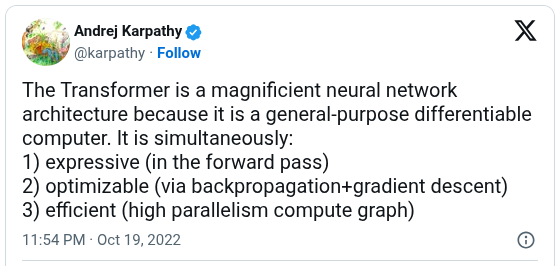
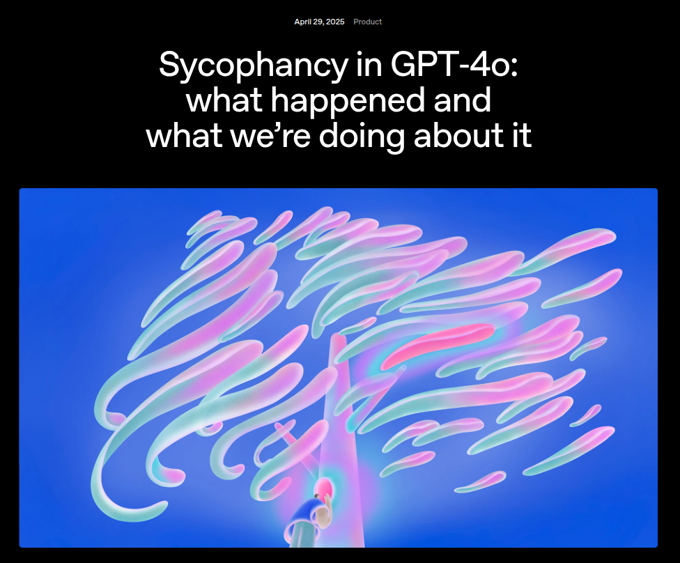
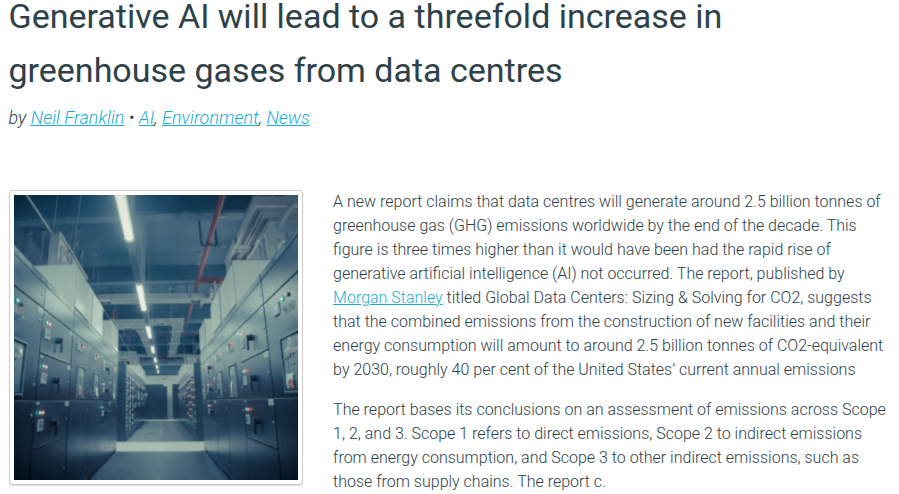

From data to behavior: the full language-modeling pipeline
Setup
Audience Prompt
What four ingredients make an LLM work?
If you built one from scratch, you would need data, an architecture, a learning signal, and serious compute power.
1
???
Click for answer
Data
Curated text that teaches the model what patterns exist.

2
???
Click for answer
Architecture
Transformer blocks that turn context into next-token scores.

3
???
Click for answer
Learning Signal
Next-token loss plus gradient updates that change the weights.

4
???
Click for answer
Compute Power
Massive parallel hardware that makes large-scale training and inference actually feasible.

Ask: “If we built an LLM from scratch, what would we actually need?”
Reveal the four ingredients, then use the learning signal to bridge into objective, loss, and updates.
Setup
Roadmap
Workshop roadmap
Day 1 — Today
Why LLMs behave the way they do
→
Inference vs. training
→
Next-token prediction
→
Loss → gradients → updates
→
Why this objective works
→
Data, scale, and alignment
iToday: treat the model as a system being shaped.
Day 2 — Tomorrow
How a Transformer processes text and computes the next word
→
Tokenization & embeddings
→
Self-attention
→
Feed-forward layers
→
Full forward pass end-to-end
iTomorrow: treat it as a machine executing computation.
“You’ve already seen inference: context goes in, a next-token distribution comes out.
But that behavior only exists because of how the weights were trained.
Today is the shaping story. Tomorrow we zoom into the computation.”
Inference vs Training
Inference Loop
The inference (use-time) loop
At use time, the model runs a fixed computation.
The input text is tokenized once. After that, the model repeats the same loop:
score next tokens, choose one, decode it, append it, and continue.
One-time setup
Text input
→
Tokenize (one-time)
→
Context tokens
Repeat for each new token
Context tokens
→
Transformer Blocks (fixed)
→
Logits (scores for each token)
→
Softmax
→
Choose next token
→
Decode (token → text)
↻ append token to context and repeat
ThecapitalofPakistanisnext?
“The model never produces words directly — it produces token IDs.
Decoding just turns those IDs into readable text.
The loop itself runs entirely at the token level.”
Inference vs Training
Training Loop
The training (learning) loop
Training starts with the same forward pass as inference,
then adds ground truth, loss, backpropagation, and a weight update.
Context tokens
→
Transformer Blocks (weights \(\theta\))
→
Logits (raw scores)
→
Softmax
→
Predicted next token
Predicted \(P(\text{token})\)
\(\ne\)
Actual (from data)
teacher forcing — the correct next token is always known during training
↓
Cross-Entropy Loss \(\mathcal{L} = -\log P(\text{correct token})\)
"How surprised was the model by the right answer?"
\(\theta \leftarrow \theta - \eta \cdot \nabla \mathcal{L}\) nudge every weight to reduce the loss
i
Walk through each step. Emphasize: "The forward pass is identical to inference.
Training only adds the teacher signal and backward pass.
Backpropagation is just the chain rule applied mechanically —
for each weight, how much did it contribute to the error?
Then nudge it to contribute less."
Training Objective
Objective
Teacher forcing: shift the sequence by one token
One training sequence becomes many prediction problems:
each prefix is used to predict the token that comes next.
Given a token sequence \(x_1, x_2, \ldots, x_T\), teacher forcing shifts it by one position:
Inputs (prefixes)
\(x_1\)\(x_2\)\(\ldots\)\(x_{T-1}\)
Targets (next tokens)
\(x_2\)\(x_3\)\(\ldots\)\(x_T\)
At position \(t\), the model sees \(x_{\le t}\) and is scored on the true next token \(x_{t+1}\).
→Training objective: assign high probability to the true next token at every position in the sequence.
Training Objective
Loss
The equivalent loss function
Same objective, written as a loss: negative log-likelihood, or cross-entropy.
Lower loss = the model assigns higher probability to tokens that actually occurred in the dataset
!Key insight: this is distribution matching, not decision-making.
The model is pushed to fit observed text, not to pursue truth or goals.
→Next: one training iteration end-to-end — forward → loss → backward → update.
Pretraining Objective
Key Insight
What the loss never names
After one full update, the core constraint is visible: training directly rewards only better next-token prediction. Anything richer has to be useful for prediction, not separately requested.
Truth
Reasoning
Helpfulness
Safety
Goals
Consistency
\[\mathcal{L} = -\log P_{\theta}(x_{t+1} \mid x_{\le t})\] that is the whole signal
iThe narrow bottleneck: everything the model learns has to pass through lowering next-token error.
?So why do facts, code, and reasoning show up at all? Next we zoom out from one update to the broader pressures created by repeating this objective at scale.
"The loss does not explicitly name truth, reasoning, helpfulness, or safety. It only rewards better next-token prediction. So if any richer behavior appears, it has to be instrumentally useful for prediction."
Deep Dive: One Update
Step 1 — The Task
Predict the next token
We’ll trace one concrete training example from input context to weight update.
"ThecapitalofPakistanis???
iThe model sees context tokens and must assign probabilities to possible next tokens. The dataset already contains the answer; we just hide it and ask the model to guess.
Set up the concrete example. This is one single training step — we'll trace it all the way through loss computation to parameter update.
Deep Dive: One Update
Step 2 — Forward Pass
The model outputs a probability distribution
The prefix runs through the Transformer and becomes a probability distribution over the vocabulary.
"ThecapitalofPakistanis
↓
Transformer
attention + FFN layers
\(\sim 7 \times 10^9\) params
↓
Predicted distribution over next tokens
iThe final layer emits logits, and softmax turns them into probabilities that sum to 1. Early in training, this still looks a lot like guessing.
Deep Dive: One Update
Step 3 — The Target
What the model should have predicted
We know the correct next token from the training data. The target distribution puts \(100\%\) probability on the correct answer.
Model's prediction
Target (ground truth)
!The model only gave \(8\%\) to "Islamabad", but the target says it should be \(100\%\). That gap is what the loss function measures.
Deep Dive: One Update
Step 4 — Compute the Loss
Cross-entropy loss: how wrong is the model?
The loss measures the gap between prediction and target. For next-token prediction, we use cross-entropy loss.
iIntuition: if the model gave \(100\%\) to "Islamabad", \(\mathcal{L} = -\log(1) =\) \(0\) (perfect). If only \(1\%\), \(\mathcal{L} = -\log(0.01) \approx\) \(4.6\) (terrible). The loss captures "how surprised the model is by the right answer."
Deep Dive: One Update
Step 5 — Backpropagation
Backpropagation computes gradients
The loss signal flows backward through the network. For each parameter, we compute how changing it would affect the loss.
i\(\eta\) is the learning rate. The gradient tells each parameter which way to move and by how much.
"This is the part that actually makes learning happen. The gradient is a vector pointing in the direction of steepest increase of the loss — so we go the opposite direction to decrease it."
Deep Dive: One Update
Step 6 — After Update
The model improves!
After the update, the model assigns more probability to the correct token. Repeat this across many examples, and the model learns.
Before update
→
After update
Loss before
\(2.53\)
→
Loss after
\(1.27\)
✓After one step, "Islamabad" rises from \(8\%\) to \(28\%\), and the loss drops from \(2.53\) to \(1.27\). Scale that up, and the model gradually learns.
Reasoning Emergence
Key Idea
Why a local objective can create reasoning-like behavior
Local objective, global pressure: the model is graded one token at a time, but getting that token right often requires a coherent picture of the whole prefix.
\[\text{At each position: raise the probability of the true next token}\]
Entities
Track who is who and how references connect across the passage.
Causal Cues
Infer what caused what, and which outcomes are still possible.
Constraints
Rule out continuations that violate timing, access, or prior facts.
Multi-step Structure
Maintain the shape of a plan, proof, argument, or story.
i"Reasoning-like" behavior can be the cheapest way to reduce prediction error, even when the loss never asks for reasoning explicitly.
Reasoning Emergence
Interactive Example
Next-token prediction in a Pakistani drama
The answer is implied, not stated. To predict the next token here, the model has to combine timing, access, and entity tracking.
Karachi, one evening...
10:30 Shahbaz Ahmed is found dead in his office. Cause of death: poison.
Three people matter in the story: Farah (secretary), Salman (business partner), and Rukhsana (cleaner).
9:50 Farah has already left the office.
10:00 Salman leaves for a meeting.
10:20 Rukhsana makes tea for Shahbaz.
Forensics: the poison is taken between 10:20 and 10:30.
CCTV: after 10:00, only one person enters the pantry.
Police review the evidence and conclude the killer was ___
?Pick the suspect whose timeline fits every clue.
→No line explicitly states the answer. Correct next-token prediction requires integrating entity tracking, timing, and access constraints.
Reasoning Emergence
Takeaway
One next token can depend on the whole story
The label is still local, but the evidence is distributed across many lines. That is why next-token training can reward richer internal state.
Given a prefix, output a distribution over the next token. During training, we reward higher probability on the true continuation.
To predict correctly, it must track
Time window: when the poison could have been taken (10:20–10:30)
Access: who could have reached the pantry during that window (departures + CCTV)
Consistency: reconcile all lines into one coherent timeline
✓Key point: local supervision can reward rich internal state. Here, the model is pushed to build a coherent case file: suspects, timeline, and constraints.
Immediately after the drama slide: the supervision is still only the next token, but getting that token right rewards a coherent internal case file. The “reasoning” is the latent state that makes the correct continuation likely, not an explicit label.
Activity
Interactive
You Are the Language Model
Try each blank first. Then reveal what kind of knowledge it depends on. “Just predict the next token” quietly demands many different capabilities.
The Eiffel Tower is located in ???type?world knowledge
After the rain stopped, the children ran outside to ???type?common sense
She said "I'm not angry," but the tone of her voice suggested she was actually quite ???type?pragmatics
If all roses are flowers, and all flowers need water, then all roses need ???type?logic
The sum of \(127\) and \(385\) is ???type?arithmetic
def fibonacci(n): if n <= 1: return n return fibonacci(n-1) + ???type?code structure
Let participants try the blanks first. The point is not memorization; even this simple objective calls on world knowledge, common sense, code structure, logic, arithmetic, and pragmatics.
Scale & Data
Scale
Pretraining at scale repeats the same objective billions of times
Same loop, huge exposure. This is where the model first picks up language fluency, broad statistical regularities, and background knowledge useful for continuation.
✓What emerges first: fluent continuation: syntax, grammar, coherence, and broad background knowledge. Specialization and instruction-following come later.
Scale & Data
Data Mixture
Capability follows the data mixture
Once the model has language foundations, the next lever is the distribution you continue training on. Different mixtures reward different strengths.
Code-heavy mixture
Example: 80% code + technical text, 20% generic data
Strength: better symbolic precision, decomposition, and code completion.
Tradeoff: less stylistic range in narrative or poetic writing.
Literary-heavy mixture
Example: 80% literary/prose text, 20% generic data
Strength: richer tone control, narrative fluency, and stylistic variation.
Tradeoff: less reliability on coding and math-heavy symbolic tasks.
!The model is still learning from token statistics, not from “intent.” Change the distribution, and you change what patterns it gets rewarded for.
✓Takeaway: use broad pretraining for foundations, then use the data mixture to steer specialization.
This is the specialization dial. Foundations come from broad pretraining; later data mixture changes what the model becomes especially good at.
Alignment
Interactive
It's still just a text completer
Pretraining made the model a powerful completer, not automatically a helpful assistant. So what continuation does it find likely here?
What continuation does the base model expect?
What is the capital of France?
What is the capital of France?
What is the capital of Germany?
What is the capital of Italy?
What is the capital of Spain?
What is the capital of ...
!It continued a familiar pattern instead of answering. Quiz lists are common in training data, so the model keeps the list going. Helpfulness is not the default objective.
Ask the audience what the model finds likely, not what it “should” do. Then reveal the continuation and use it to set up prompt steering versus actual alignment.
Alignment
Interactive
Can we fix this without changing the model?
The weights are frozen. All you can change is the prompt. Can formatting alone steer next-token completion into useful behavior?
Prompt shaping can steer behavior
Same model, same weights. Only context formatting changes what continuation becomes likely.
Chat — get a helpful reply
What is the capital of France?
User: What is the capital of France?
Assistant:
→ "The capital of France is Paris."
Math — get the answer
347 + 128
347 + 128 =
→ "475"
Code — get the implementation
fibonacci function
def fibonacci(n):
"""Return the nth Fibonacci number."""
→ completes the function body
✓You are not changing the model. You are only changing the context so a reply, answer, or function body becomes the most likely continuation.
!But this is brittle. Prompt tricks steer behavior; they do not make helpfulness the default. That is why post-training exists.
Run this as a pure prompt-formatting experiment. Stress that no retraining is happening yet; we're only steering local continuation probabilities.
Final Demo
Live Demo
Common LLM failures, live
Even chat-tuned models can still fail on low-level tasks. Try a legacy chat model on letter counting, reversal, exact copying, sorting, and decimal comparison.
Model
gpt-3.5-turbo-0125
Tap a probe to auto-type and send
Tap a probe or type your own prompt. The transcript stays here until you clear context.
Enter an API key, then send a probe.
What these probes test
Character control: counting letters or reversing a word requires finer tracking than many token predictors manage well.
Exactness: copying a word N times or sorting a short list reveals how quickly outputs drift from strict constraints.
Symbolic comparison: decimals and ranking tasks expose the gap between pattern-matching and exact reasoning.
iContext persists across turns. Use Clear context whenever you want a fresh start.
Alignment
Post-training
Why post-training exists
Prompt tricks can steer a base model, but they are fragile. Post-training updates the weights so assistant-style behavior becomes more consistent, robust, and policy-constrained.
iPrompting: shape context at inference time. Post-training: shape parameters during training.
Step 5
Supervised fine-tuning (SFT)
Train on chat demonstrations: user turns to assistant replies.
Teach stable instruction-following and response structure.
Make assistant-style continuation the default.
Step 6
Preference training + RLHF
Use human rankings to separate better from worse candidate replies.
Push behavior toward helpfulness, policy compliance, and safer refusals.
Improve robustness beyond specific prompts or formatting tricks.
Base completer + chat template
→
SFT
→
Preferences / RLHF
→
Aligned assistant
iThe model is still doing next-token generation. Alignment changes which continuations it is trained to prefer.
Bridge directly from the activity: prompting can steer behavior, but post-training changes the default behavior itself. Keep repeating: still autoregressive, now trained to prefer better continuations.